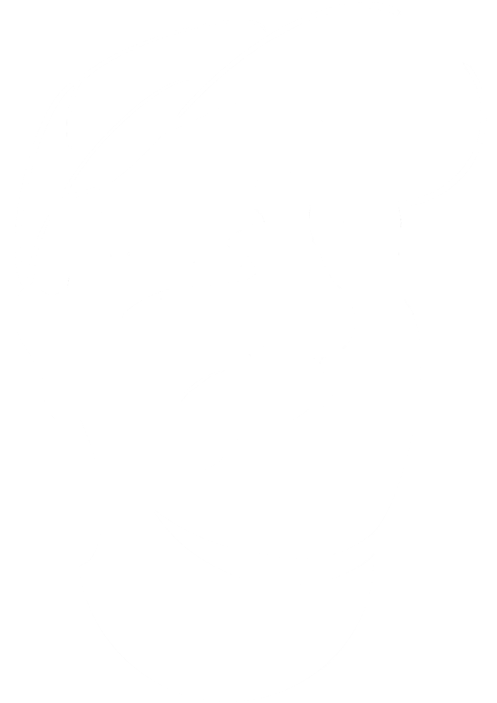

Care Pathways
Guided care navigation — mobile & web
Turned fragmented health, benefits, and program content into guided, personalized care journeys.
View case study
Behind the mark
UX designer focused on enterprise products, AI-assisted workflows, and scalable design systems.
I bridge people, technology, and business goals by turning complexity into meaningful, human-centred experiences.
Featured work
Guided care navigation — mobile & web
Turned fragmented health, benefits, and program content into guided, personalized care journeys.
View case studyAI-assisted fee schedule management platform
Centralized a spreadsheet- and email-driven workflow into a searchable, AI-assisted platform.
View case studySelected disciplines
No. Outside of work, I am a photographer, a painter, a lover of music, a cruising skateboarder, and a baker of a mean cinnamon granola. When I don't know a subject, I dig in deep enough to be dangerous — or at least to hold a proper conversation about it.